Detectando Exoplanetas I
Cómo encontrar planetas que no podemos ver. Tres métodos indirectos que detectan al planeta por su efecto sobre la estrella: timing, astrometría y velocidad radial. Todo arranca en la órbita y el problema de los dos cuerpos.
Hasta hace unos 40 años no se conocía ningún planeta fuera del Sistema Solar. Hoy conocemos miles, y podemos hacer estadística sobre ellos. ¿Cómo se detecta algo que es millones de veces más débil que su estrella y que ni siquiera podemos resolver? La clave de esta clase es que casi todos los métodos son indirectos: no vemos el planeta, vemos cómo el planeta perturba a la estrella. Para entender esas perturbaciones hay que dominar primero la geometría de una órbita, y luego tres formas de medirla: el reloj que se adelanta o atrasa (timing), la posición de la estrella que dibuja un bucle (astrometría) y el corrimiento Doppler de su luz (velocidad radial).
¿Qué es un planeta (y un exoplaneta)?
Una definición útil para conversar y para dejar fuera a Plutón.
La palabra planeta viene del griego planētēs: «errante», «vagabundo». El nombre delata la observación más antigua: hay «estrellas» que no se quedan fijas, sino que cambian de posición respecto a las demás de noche a noche y de semana a semana. La definición de diccionario («cuerpo celeste sin luz propia que gira en órbita elíptica alrededor del Sol o de una estrella») sirve para arrancar, pero tiene agujeros: dejaría entrar al auto que SpaceX lanzó a orbitar el Sol, o a cualquier asteroide.
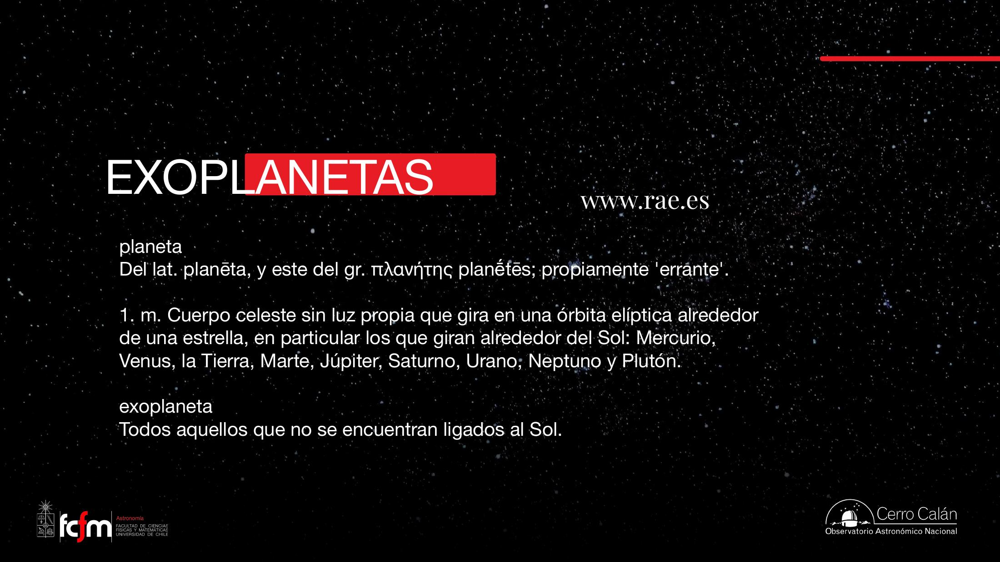
El profesor insiste: una buena definición no es trivia, es una herramienta para avanzar. Bajar a Plutón a «planeta enano» fue una buena decisión práctica: de no hacerlo, hoy habría ~25 planetas (por todos los objetos transneptunianos similares que se descubrieron), una pesadilla para memorizar. La definición se ajustó pidiendo, entre otras cosas, que el cuerpo sea lo suficientemente grande para ser redondo.
Por qué los cuerpos grandes son redondos: la gravedad no tiene escala
Hay cuatro fuerzas fundamentales. Comparando un protón consigo mismo, la fuerza electromagnética es ~1040 veces más intensa que la gravedad. Entonces, ¿por qué a gran escala manda la gravedad? Porque en el universo hay casi la misma cantidad de carga positiva que negativa: al acumular masa, las cargas se cancelan (como tirar un millón de monedas y quedar cerca del 50/50), y la electromagnética neta tiende a cero. La masa, en cambio, solo suma: nunca hay «masa negativa» que la cancele.
La gravedad es : no contiene ninguna distancia o tamaño «especial». Por eso los discos de galaxias, los discos protoplanetarios y los discos de los que salen las lunas tienen proporciones parecidas (algo así como 1:100 entre grosor y diámetro), aunque sus tamaños difieran por factores enormes. Es como mirar el mar desde un avión: sin referencia, no sabes si las olas están a 10 m o a 1 km. La gravedad es fractal en ese sentido.
Cuando se acumula mucha masa, solo importa la gravedad, que tiene simetría esférica; por eso los cuerpos grandes son redondos y están en equilibrio hidrostático. Bajo cierto tamaño (~10–100 km) la gravedad ya no domina y aparecen cuerpos con forma irregular, como los asteroides.
Lo que distingue a un planeta de una estrella es qué puede quemar en su interior:
- Planeta / exoplaneta: no logra fusionar deuterio. Puede producir algo de energía por contracción gravitatoria, pero no por reacciones nucleares sostenidas.
- Enana café (marrón): logra quemar deuterio, pero no hidrógeno.
- Estrella: logra quemar hidrógeno en su núcleo («saca carnet»).
El Sol se sostiene por un feedback negativo: si se contrae, la temperatura sube, hay más fusión, más energía, y eso frena la contracción; al expandirse se enfría y vuelve a contraerse. Ese balance es el equilibrio hidrostático, donde la gravedad le gana al empuje electromagnético del gas.
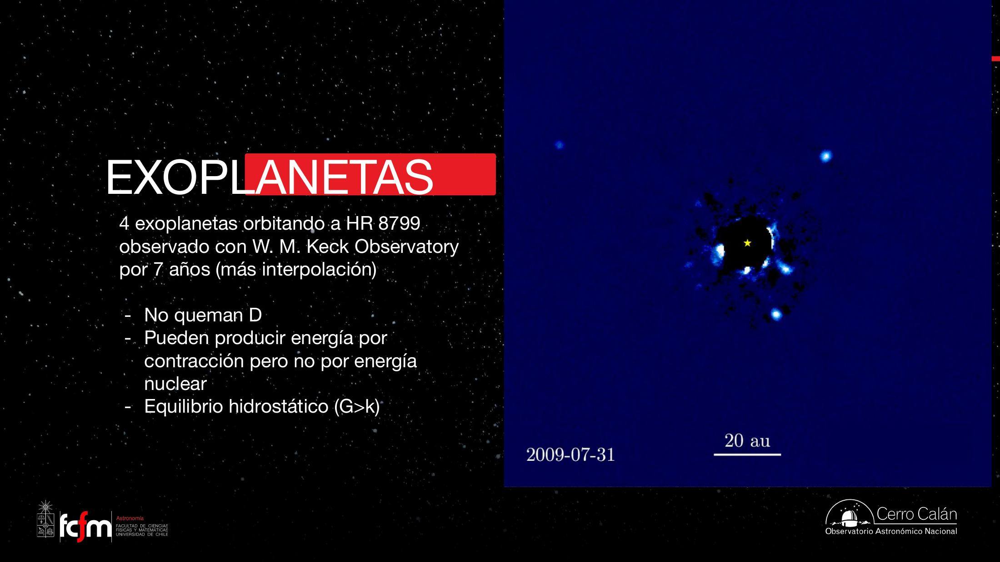
Variedad de orígenes y panorama de métodos
Cada planeta queda marcado por su estrella y su entorno.
¿De dónde salen los planetas? En general se forman junto con sus estrellas. La mejor evidencia está en casa: en el Sistema Solar todos los planetas orbitan casi en el mismo plano (la eclíptica). Eso no es casualidad: indica que surgieron de un disco protoplanetario, un disco aplanado que aparece de forma natural cuando se forma una estrella. Cuando las noticias hablan de «alineación planetaria del siglo», en realidad los planetas siempre están alineados en la eclíptica.
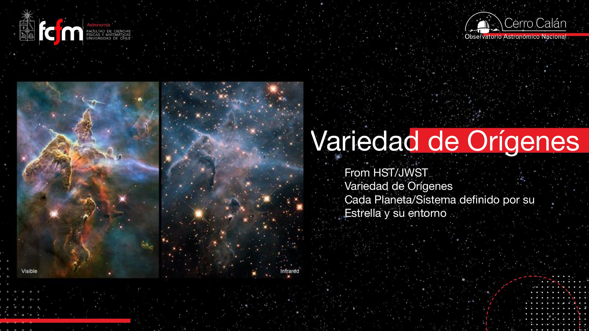
El astrónomo aprovecha cualquier correlación entre objetos para inferir su historia, como quien observa gente de distintas edades en una plaza y reconstruye un ciclo de vida sin seguir a nadie 80 años. Es inferencia estadística sobre una población (muchos sistemas en distintas etapas) en lugar de un estudio longitudinal de un solo objeto: cambias tiempo por número de muestras.
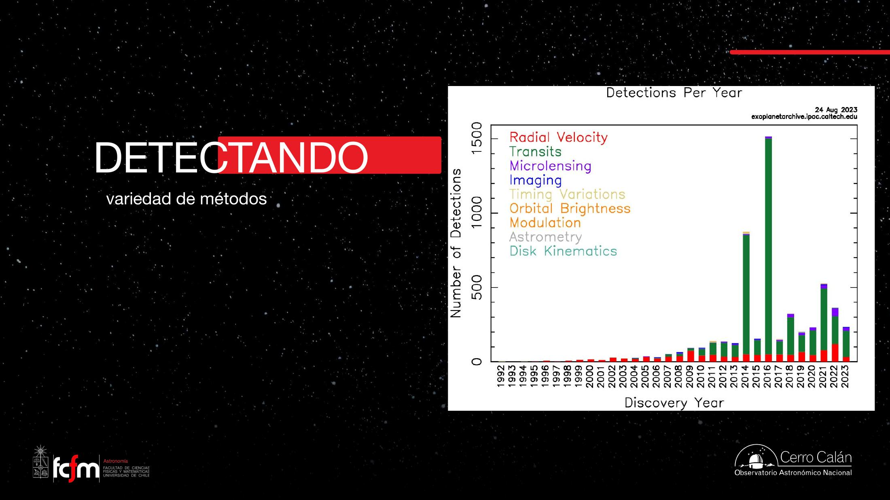
El curso se organiza por método. Esta primera clase cubre los tres que detectan al planeta indirectamente, observando el movimiento de la estrella: timing, astrometría y velocidad radial. Tránsitos y microlensing vienen en las clases siguientes.
La órbita: el problema de dos cuerpos y sus 6 parámetros
Un cambio de variables convierte el movimiento en seis números constantes.
Todo planeta, por definición, orbita una estrella. La ecuación de gravedad para dos masas ( y ) tiene solución exacta. Al resolverla (con el cambio de variable ) aparece un oscilador: la misma matemática que un péndulo. La órbita resultante es una cónica: elipse, parábola o hipérbola.
La 2.ª ley de Newton, , relaciona la fuerza con la segunda derivada de la posición. Para «deshacer» dos derivadas (integrar dos veces) se necesitan dos condiciones iniciales vectoriales: la posición inicial y la velocidad inicial. En 3D, cada vector son 3 números ⇒ 3 + 3 = 6 números determinan toda la órbita futura. La fórmula de la solución es la misma; lo que cambia con las condiciones iniciales es qué órbita obtienes (caer al Sol, un círculo, una elipse...).
El truco elegante: en vez de la posición y velocidad (que cambian a cada instante), se hace un cambio de coordenadas a seis números que no cambian con el tiempo. Son los parámetros keplerianos (o elementos orbitales). Son la «condición inicial» en una forma mucho más cómoda.
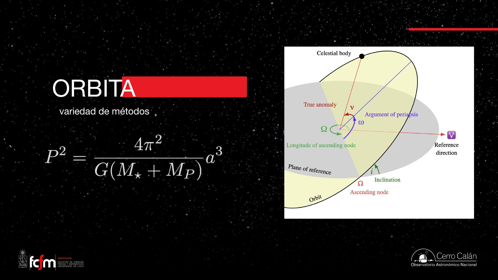
Qué significa cada parámetro
- Semieje mayor : el tamaño de la elipse; fija la distancia típica estrella–planeta.
- Excentricidad : qué tan «achatada» es. En una elipse la suma de distancias a los dos focos es constante; la estrella está en uno de los focos. La distancia centro–foco es ; el punto más cercano (periastro) está a y el más lejano (apoastro) a .
- Inclinación : el ángulo entre el plano de la órbita y el plano de referencia (para exoplanetas, el plano del cielo).
- Longitud del nodo ascendente : orienta la línea donde la órbita cruza el plano de referencia «de abajo hacia arriba» (nodo ascendente).
- Argumento del periastro : dentro del plano orbital, hacia dónde apunta el punto de máximo acercamiento.
- Anomalía (verdadera , o equivalente): dónde está el objeto ahora sobre la órbita; es el único que evoluciona con el tiempo.
La famosa tercera ley de Kepler sale directamente de este problema de dos cuerpos:
El problema de tres cuerpos en general no tiene solución analítica: es caótico (de ahí la novela/serie homónima). Existen soluciones aproximadas (puntos de Lagrange cuando un cuerpo es diminuto) y configuraciones estables curiosas, pero como regla los parámetros orbitales del Sistema Solar real van cambiando lentamente con el tiempo: hablamos de elementos «osculadores», válidos instante a instante.
Velocidad radial: el efecto Doppler de la estrella
El primer método con que se descubrieron exoplanetas alrededor de estrellas normales.
La estrella y el planeta orbitan en realidad su centro de masa común. El que más se mueve es el más liviano (el planeta), pero la estrella también oscila un poco. Esa oscilación de la estrella, en la dirección que apunta hacia nosotros, es lo que mide la velocidad radial.
«Si bailo con mi hija de 8 años, giramos prácticamente en torno a mí. Si bailo con mi señora, de masa parecida, ambos oscilamos en torno a un punto intermedio.» Cuanto mayor es la masa del planeta respecto a la estrella, más se bambolea la estrella alrededor del centro de masa.
«Radial» se refiere a la dirección que une al observador con el objeto. El método se basa en el efecto Doppler: igual que la sirena de una ambulancia suena más aguda al acercarse y más grave al alejarse, la luz de la estrella se corre al azul cuando se acerca y al rojo cuando se aleja. La velocidad radial es positiva al alejarse y negativa al acercarse.
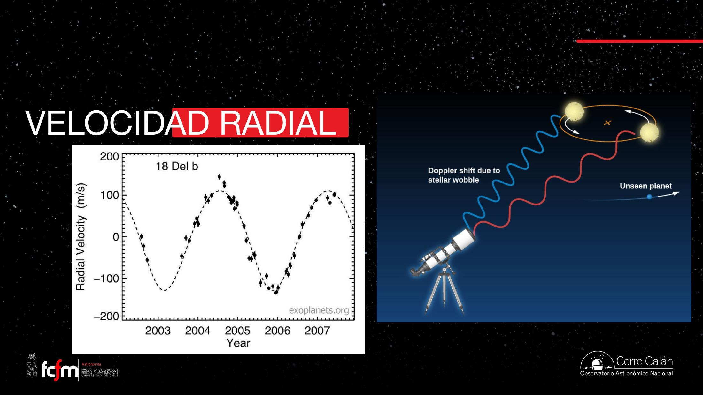
La estrella emite casi como un cuerpo negro, pero los gases de su superficie absorben ciertas longitudes de onda muy específicas (las transiciones atómicas vistas en la clase de espectros). Quedan líneas oscuras en posiciones precisas. Como esas posiciones son conocidas, medir cuánto se corrieron hacia el rojo o el azul da la velocidad. El profesor lo ilustra con «un niño que solo agarra pelotas rojas y las relanza en cualquier dirección»: detrás de él faltan las pelotas rojas ⇒ línea de absorción.
Lo que se grafica es la velocidad de la estrella en función del tiempo. Si la órbita es circular, la curva es una sinusoide; si es excéntrica, se deforma según los parámetros orbitales. La amplitud de esa sinusoide se llama :
Reescrita en unidades cercanas a nosotros (una forma muy usada por astrónomos):
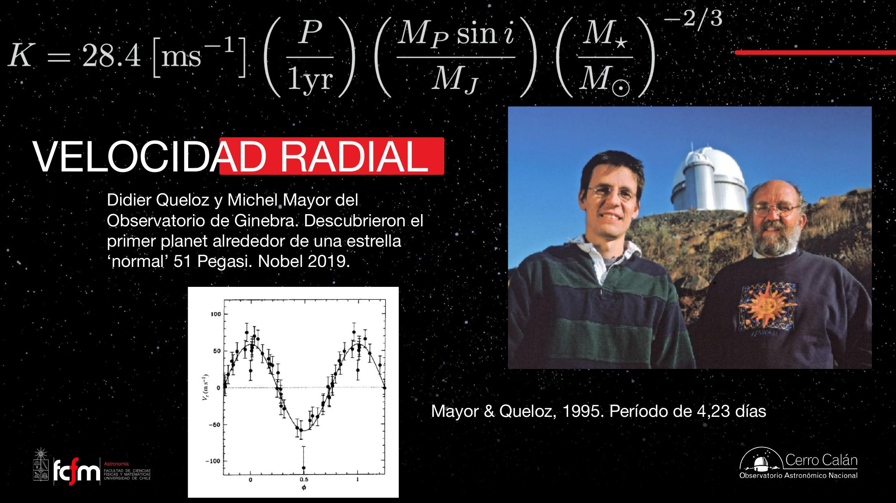
La degeneración M·sin(i) y las confusiones
El gran talón de Aquiles de la velocidad radial.
El método solo es sensible a la componente radial de la velocidad. Si el plano de la órbita está «de canto» (visto de perfil), vemos la velocidad máxima; si está «de frente» (face on), no vemos casi nada. En general las órbitas están orientadas al azar, así que lo que medimos lleva un factor .
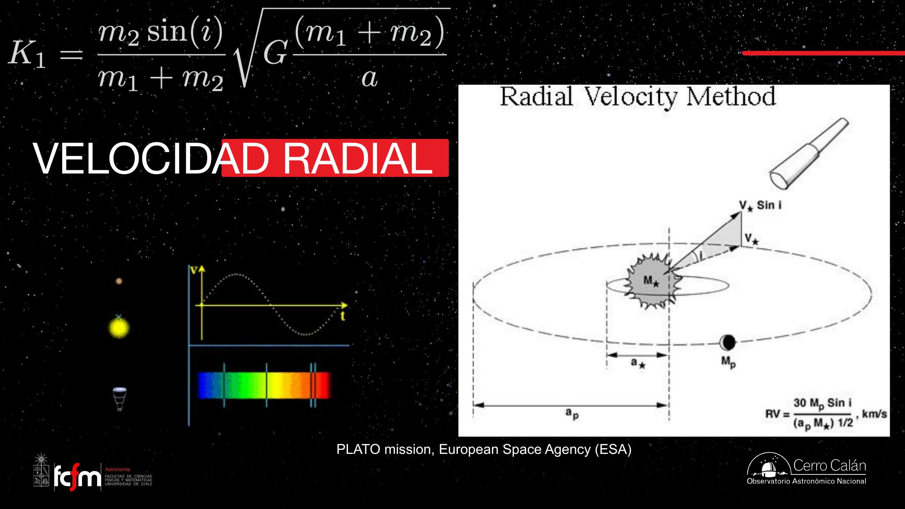
La velocidad radial entrega , no . Esto da un límite inferior de la masa (porque ). Es insalvable con este método solo: por eso a menudo se combina con tránsitos (que sí fijan la inclinación).
El problema más grave: una estrella binaria casi de frente puede imitar a un planeta. Una segunda estrella, muy masiva, moviéndose mucho pero vista casi face on, produce una señal radial pequeña, igual a la de un planeta visto de canto. La mitad de los «puntitos» del cielo son en realidad binarias, así que esta confusión es habitual.
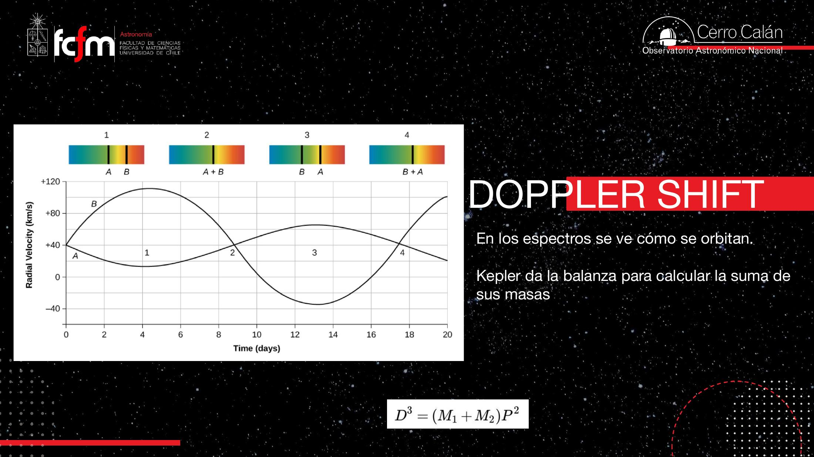
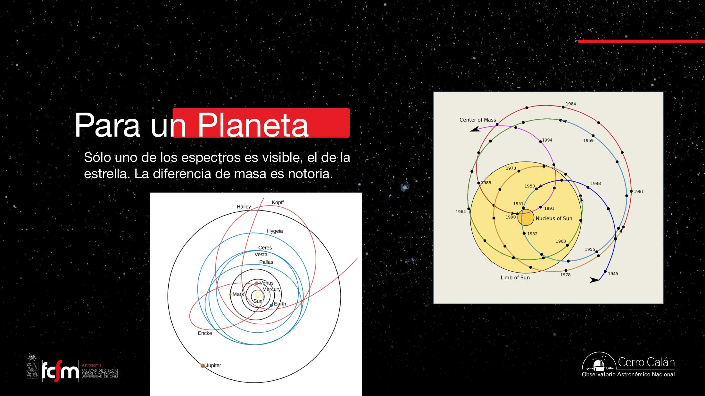
es una degeneración de parámetros: dos incógnitas ( e ) entran solo como su producto, así que el ajuste no puede separarlas. Es el mismo problema que un modelo sub-identificado: necesitas una observación independiente (p. ej. el tránsito, que restringe ) para romper la degeneración.
Sesgos del método: qué y cuándo observar
Cada técnica «ve» mejor cierto tipo de planeta. Eso sesga lo que descubrimos.
Para que la velocidad radial funcione hay que esperar el momento correcto y observar durante varias semanas o años. Antes de ver la órbita hay que restar muchas correcciones: el sistema completo puede alejarse de nosotros con una velocidad constante (una recta que hay que sustraer), y hay efectos sistemáticos del observador y del instrumento.
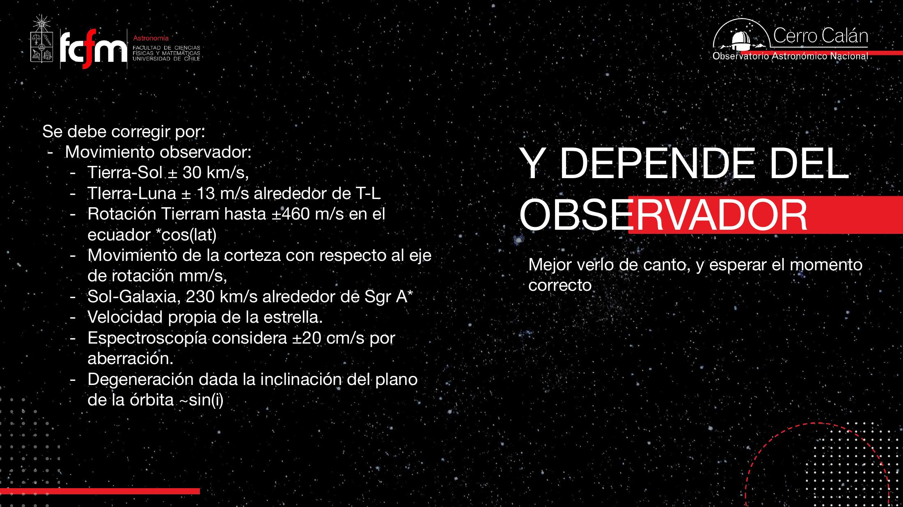
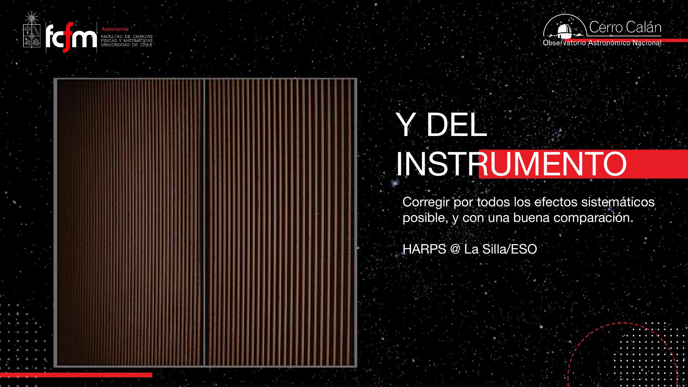
Para mover mucho a la estrella conviene un planeta masivo (tipo Júpiter). Para que el período sea corto (y caber en la ventana de observación) conviene que esté cerca de la estrella. La intersección de ambos sesgos son los hot Jupiters: planetas gigantes pegados a su estrella, a pocos radios estelares (mucho más cerca que Mercurio del Sol). No es que abunden en el universo: es que este método los ve con facilidad.
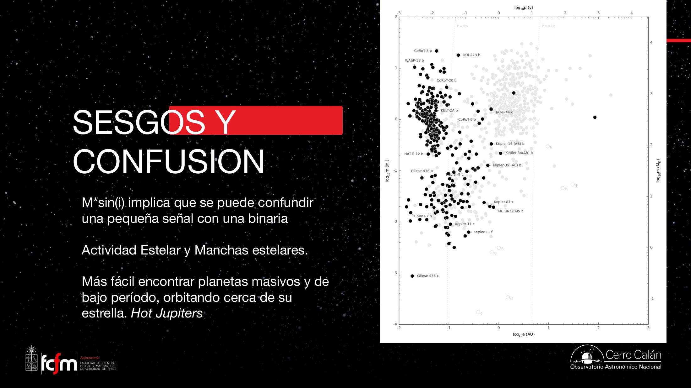
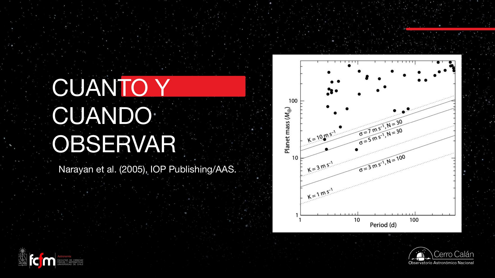
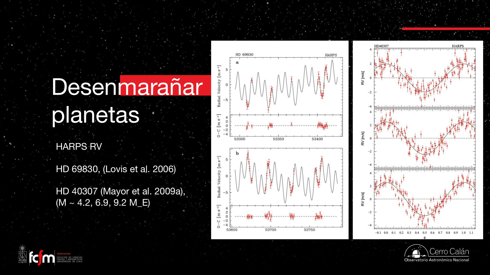
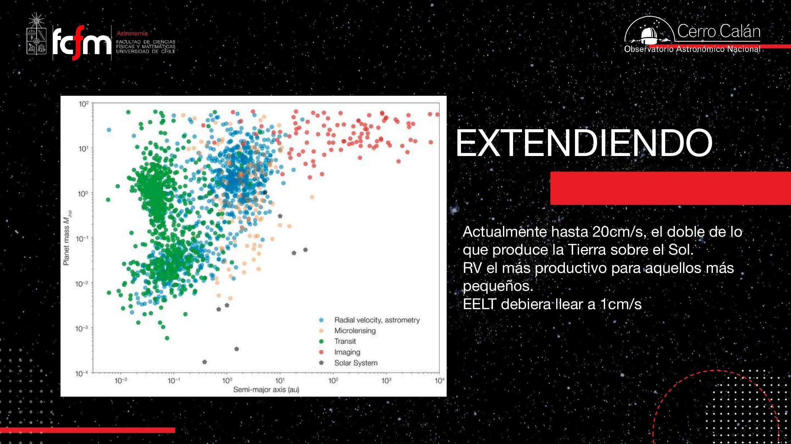
Timing: relojes cósmicos que se adelantan
El primer exoplaneta de la historia se detectó así, alrededor de un púlsar.
La idea del timing es la misma que la velocidad radial, pero en vez de medir el corrimiento de una frecuencia de luz, se mide la diferencia en el tiempo de llegada de un pulso. Si la fuente emite algo perfectamente periódico (un «tic-tac»), y se acerca y aleja por orbitar un centro de masa, ese tic-tac llega más frecuente al acercarse y menos frecuente al alejarse: un Doppler aplicado al reloj.
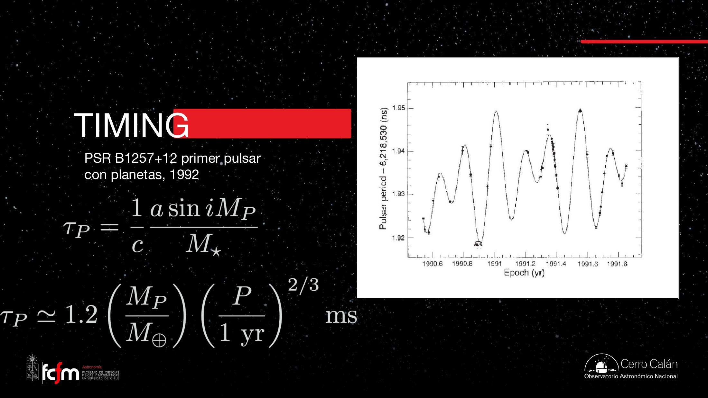
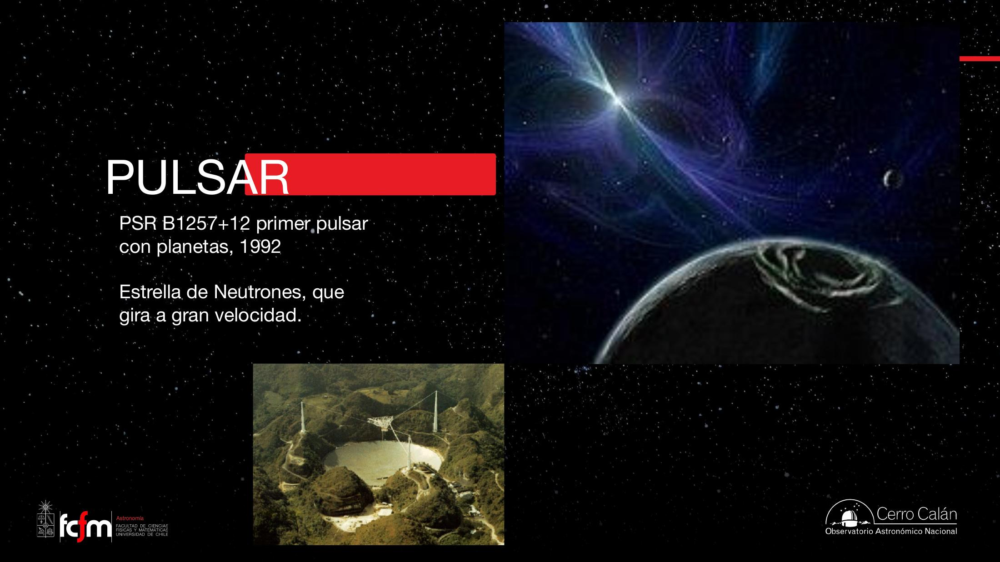
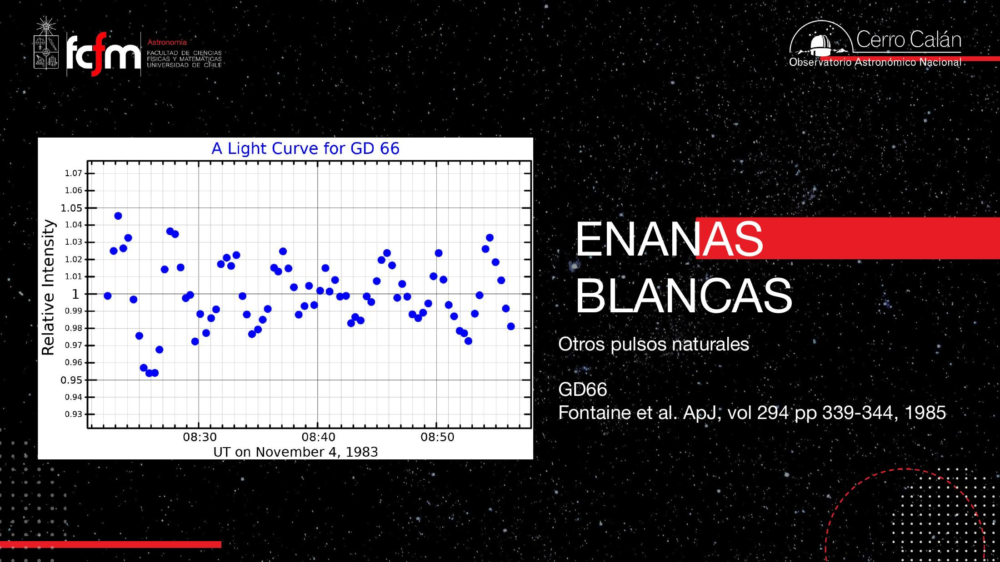
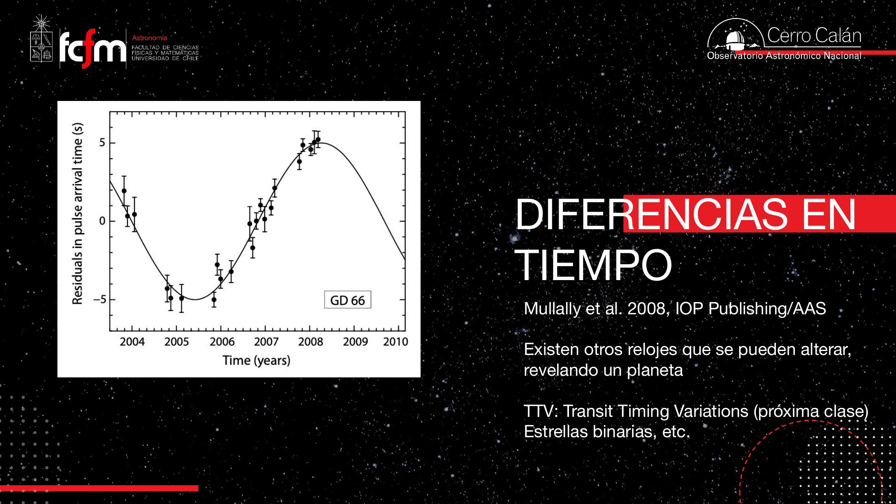
El timing es, literalmente, medir jitter en la fase de una señal de reloj. Un planeta introduce una modulación periódica en los tiempos de llegada; detectarlo es buscar esa periodicidad en los residuos tras restar el modelo del reloj. Es análogo a medir desviaciones de fase respecto a un oscilador de referencia.
Astrometría: ver moverse a la estrella
Medir el bucle que dibuja la estrella en el cielo. El instrumento clave es Gaia.
La astrometría mide la posición de la estrella con precisión extrema, buscando el pequeño bucle que dibuja al orbitar el centro de masa. El tamaño angular de ese bamboleo es:
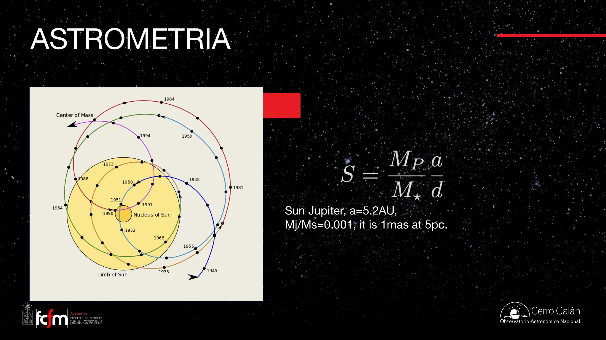
Medir distancias relativas entre estrellas vecinas en una foto es fácil y preciso (como medir con regla la separación entre porotos en una mesa). Lo difícil es la posición absoluta: comparar trozos del cielo muy separados. Cada foto hereda la incertidumbre de catálogos previos tomados con telescopios peores, y los errores se acumulan.
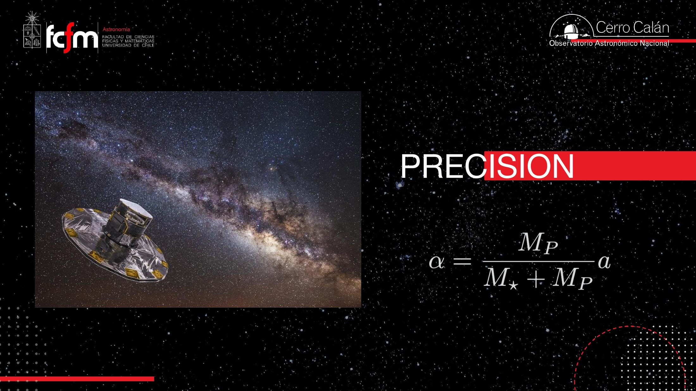
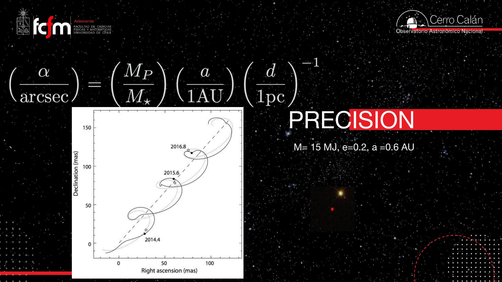
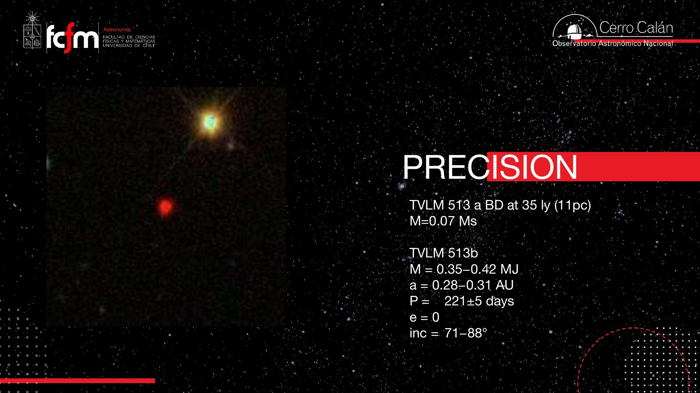
Mensaje central: todo método impone un sesgo; cada técnica se enfoca en un tipo de planeta. La gran sorpresa post-Kepler (tránsitos) fue que los planetas más comunes de la Galaxia no existen en el Sistema Solar: rocosos intermedios, más grandes que la Tierra y más chicos que Urano (super-Tierras / mini-Neptunos). El microlensing (próxima clase) es de los menos sesgados, ideal para preguntar cuáles son realmente los planetas más comunes y cuántas estrellas tienen una «Tierra».
Conceptos clave
Tabla de repaso rápido.
| Concepto | Qué es / valor | Por qué importa |
|---|---|---|
| Exoplaneta | Planeta no ligado al Sol; no quema deuterio | Frontera con enanas café (queman D) y estrellas (queman H) |
| Equilibrio hidrostático | Gravedad vs. presión del gas | Hace redondos a los cuerpos grandes (criterio de «planeta») |
| Gravedad sin escala | Discos galácticos/protoplanetarios con proporciones similares | |
| Disco protoplanetario | Disco aplanado al formarse la estrella | Explica que los planetas compartan plano (eclíptica) |
| 6 parámetros keplerianos | + anomalía | Cambio de variable: 6 números constantes que fijan la órbita |
| 3.ª ley de Kepler | Relaciona período, distancia y masa total | |
| Velocidad radial | Doppler de la estrella; amplitud | 1.ᵉʳ método (51 Peg b, 1995; Nobel 2019) |
| Degeneración M·sin(i) | Solo se mide | Da masa mínima; se rompe con tránsitos |
| Hot Jupiters | Gigantes muy cerca de su estrella | Sesgo: lo que la velocidad radial ve más fácil |
| Timing | Doppler en el tiempo de llegada de pulsos | 1.ᵉʳ exoplaneta (púlsar PSR B1257+12, 1992); TTV |
| Astrometría | Mide el bucle de la estrella; favorece grande y pequeño | |
| Gaia | Dos cámaras a ángulo fijo, barre el cielo | Posiciones absolutas precisas ⇒ astrometría de exoplanetas |
Exámenes de práctica
10 exámenes de 5 preguntas (3 de alternativas autocorregibles + 2 de respuesta escrita).